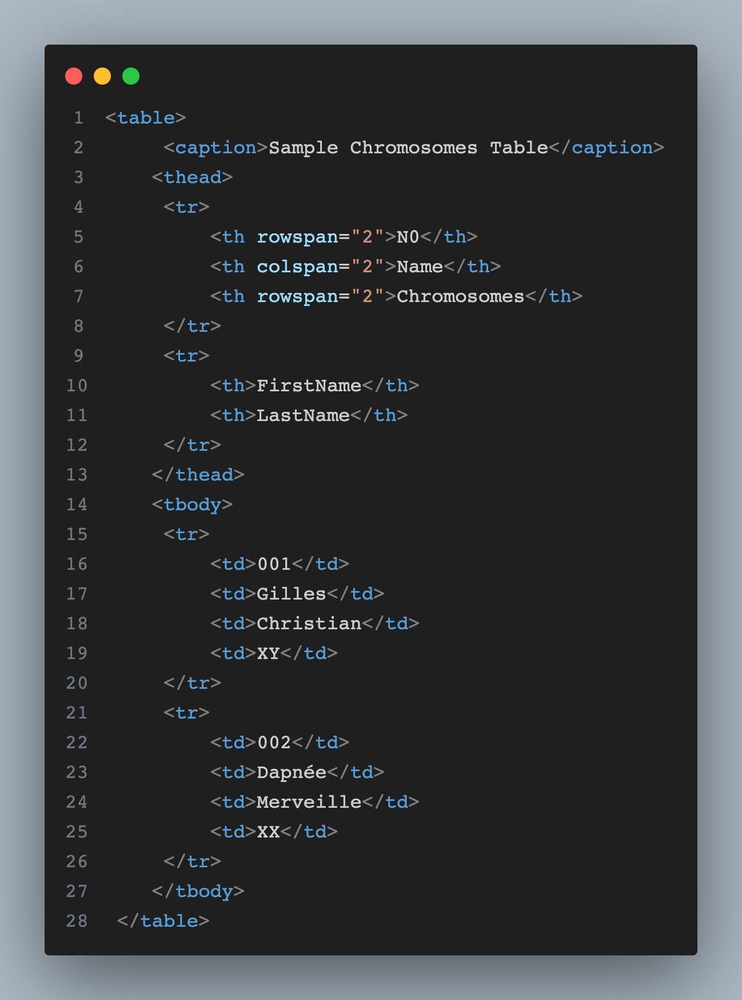
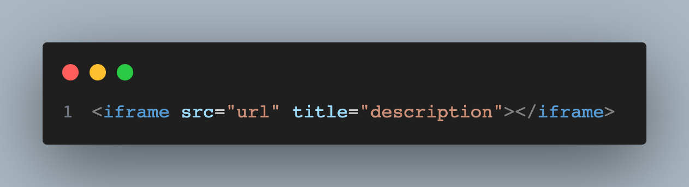
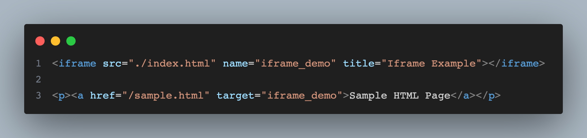

I. HTML Tables
HTML Tables allow developers to arrange data in table form (rows & columns).

Figure 2.1: HTML Tables Syntax
Know let's discuss various element contain in the `<table>` tag
- <table>
-
Defines a table in HTML.
- <caption>
-
Defines a table caption.
- <thead>
-
Use to group the header content in a table.
- <tr>
-
Defines a row in a table.
- <th>
-
Defines a header cell in a table.
- <tbody>
-
Use to group the body content in a table.
- <td>
-
Defines a cell in a table.
- rowspan
-
Is an HTML table attribute use to make a cell span over multiple rows.
- colspan
-
Is an HTML table attribute use to make a cell span over multiple columns.
Read more on HTML Tables
II. HTML List
They are used to group set of related items into a list, they exist three types of HTML List;
- Ordered List
-
It's used to define items that have a specific order. eg Steps in a process, Ranking items,Chronological lists.
- Un-ordered List
-
It's used to define items that don't have a specific order. eg A grocery list, A list of features of a product, A list of qualifications.
- Description List
-
A description list is a list of terms, with a description of each term.
Read more on HTML List
III. HTML Block & Inline
- Block elements always starts on a new line and takes up the full width available.
- Inline elements does not start on a new line and it only takes up as much width as necessary.
Read more on HTML Block & Inline
IV. HTML Classes & Id
- HTML class attribute is used to specify a class(es) for an HTML element.
- HTML id attribute is used to specify an id for an HTML element.
Read more on HTML Classes & Id
V. HTML Iframe
HTML iframe is used to display a web page within a web page.

Figure 2.2: Iframe Syntax
HTML Iframe can also be used as target frame for link as shown below;

Figure 2.3: HTML Iframe Target Syntax
Read more on HTML Iframe
VI. HTML JavaScript
JavaScript is used to make HTML pages more dynamic and interactive. And is usually associated with `<script>` & `<noscript>` tag.
- <script> Defines a client-side script (website logic).
- <noscript> Defines an alternate content for users that do not support client-side scripts.
VII. HTML File Paths
File path is used describes the location of a file in a web site's folder structure.
- Absolute File Path
-
An absolute file path gives the full URL to a file.
- Relative File Path
-
A relative file path points to a file relative to the current page.